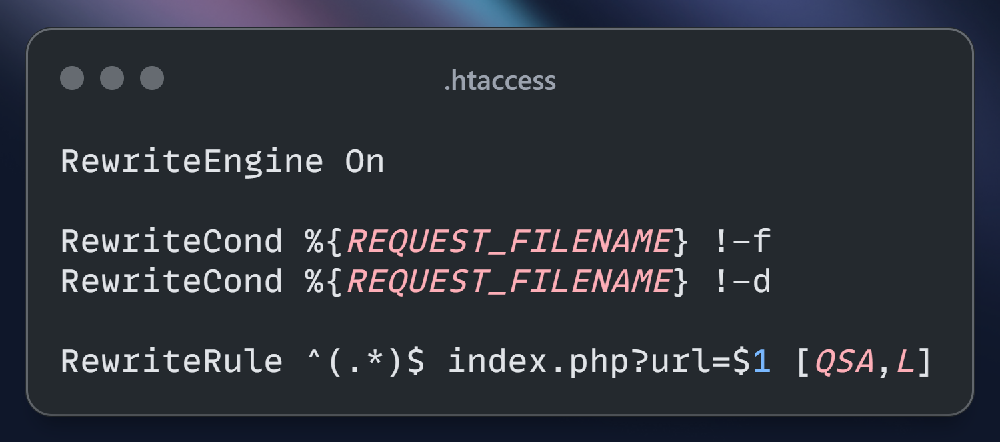
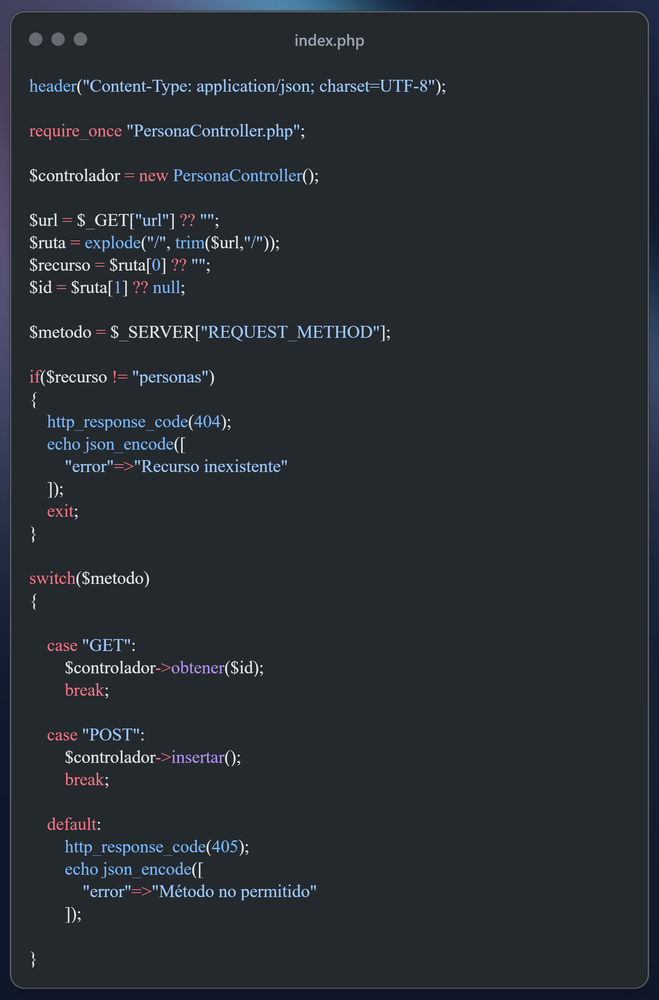
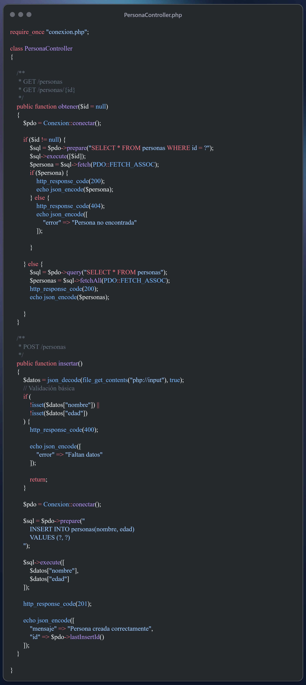

¿Qué problema resuelve el ruteo?
Pasar de un único punto de entrada ciego a URLs que dicen algo
El problema de la versión anterior
Todo pasaba por index.php, y ese archivo solo miraba el
método HTTP (GET, POST) para
decidir qué hacer. No había forma de decirle "quiero la persona con id 5" desde la URL: el id
solo podía viajar como ?id=5 en el query string.
Con ruteo, la URL misma pasa a tener significado: /personas/5 le dice
al servidor qué recurso y qué identificador está pidiendo, sin necesidad de parámetros sueltos.
Qué archivos cambian en esta entrega
.htaccess— nuevo. Reescribe cualquier URL haciaindex.php.index.php— ahora interpreta la URL reescrita para extraer recurso e id.PersonaController.php—obtener()recibe el id como parámetro y responde404si no existe.config.phpyconexion.php— sin cambios, siguen igual que en la primera versión.
.htaccess
Reescritura de URL

.htaccess — se coloca en la raíz del proyecto, junto a index.php
Línea por línea
RewriteEngine On— activa el motor de reescritura de Apache (mod_rewrite) para esta carpeta.RewriteCond %{REQUEST_FILENAME} !-f— la condición se cumple si lo pedido no es un archivo físico existente.RewriteCond %{REQUEST_FILENAME} !-d— y tampoco es una carpeta física existente.RewriteRule ^(.*)$ index.php?url=$1 [QSA,L]— si ambas condiciones se cumplen, cualquier URL^(.*)$se redirige internamente aindex.php, pasando todo lo que venía en la URL como el parámetrourl.
¿Por qué las dos condiciones?
Sin ellas, hasta un pedido de una imagen o un archivo .css real
terminaría redirigido a index.php. Las condiciones le dicen a Apache:
"solo reescribí si lo que piden no existe como archivo o carpeta real" — así los recursos
estáticos se siguen sirviendo de forma normal.
Los flags entre corchetes
| Flag | Significa |
|---|---|
QSA | Query String Append — conserva cualquier parámetro adicional que ya viniera en la URL original. |
L | Last — le dice a Apache que, si esta regla aplicó, deje de evaluar las siguientes. |
Anatomía de una URL
Lo que antes eran parámetros sueltos, ahora es la ruta misma
$recurso
Identificador → $id
Cómo se separan esos tramos en PHP
Todo lo que sigue a la base del proyecto llega como el valor de $_GET["url"],
gracias al .htaccess. A partir de ahí:
explode("/", trim($url,"/"))corta ese texto en partes usando/como separador, ytrim()se asegura de que no queden barras vacías al principio o al final.- La posición
0de ese arreglo es el recurso:$recurso = $ruta[0] ?? "". - La posición
1, si existe, es el id:$id = $ruta[1] ?? null.
El operador ?? (null coalescing) evita errores cuando esa posición no
existe — por ejemplo, cuando la URL es solo /personas sin id.
index.php
Punto de entrada, ahora con ruteo

index.php — transcribir a mano, no copiar y pegar
Lo nuevo respecto a la primera versión
- Se agregan las líneas que arman
$recursoy$ida partir de$_GET["url"], como se explicó en la pestaña anterior. - Antes del
switch, hay una validación nueva:if ($recurso != "personas")corta con404si la URL pide un recurso que no existe en esta API. $_SERVER["REQUEST_METHOD"]sigue cumpliendo el mismo rol que en la primera versión: decide qué método del controlador se llama.- La diferencia está en la llamada dentro de
case "GET": ahora es$controlador->obtener($id), pasándole el id extraído de la URL en lugar de leerlo directamente de$_GET["id"].
PersonaController.php
Ahora recibe el id como parámetro

PersonaController.php — transcribir a mano, no copiar y pegar
obtener($id = null)
Ya no busca el id dentro de $_GET: lo recibe como parámetro del
método, con null como valor por defecto. Si $id
llegó, busca esa persona puntual; si la encuentra, responde 200, y si
no, responde 404 con un mensaje claro. Si no llegó ningún id, devuelve
la lista completa con 200.
insertar() con validación
Se suma una verificación explícita: si falta "nombre" o
"edad" en el cuerpo recibido, corta con 400
y "Faltan datos", sin llegar a tocar la base de datos. Si todo está
presente, inserta y devuelve 201 junto con el id
recién creado, usando $pdo->lastInsertId().
Antes vs. ahora
El mismo objetivo, resuelto con más precisión
GET /index.php?id=5 $id llega desde $_GET["id"] Solo existe una "ruta": index.php No hay 404 real por id inexistente
GET /personas/5 $id llega desde la URL, vía .htaccess "personas" se valida como recurso conocido 404 explícito si el id no existe en la tabla
Lo que no cambió
$_SERVER["REQUEST_METHOD"] sigue siendo lo que decide entre
obtener() e insertar(). El ruteo resuelve
qué recurso e id están involucrados; el método HTTP sigue resolviendo qué acción se
quiere hacer sobre ellos. Son dos preguntas distintas, respondidas por dos mecanismos distintos.
Probando el ruteo con Postman
Las URLs ahora llevan información, no solo la dirección del archivo
Casos para probar
| Método | URL | Resultado esperado |
|---|---|---|
GET | /INET/RuteoAPI/personas | 200 con la lista completa |
GET | /INET/RuteoAPI/personas/1 | 200 con esa persona, si existe |
GET | /INET/RuteoAPI/personas/999 | 404 — "Persona no encontrada" |
GET | /INET/RuteoAPI/clientes | 404 — "Recurso inexistente" |
POST | /INET/RuteoAPI/personas | 201 si el body trae nombre y edad; 400 si falta alguno |
Notar que el id ya no se manda como query string
(?id=1): ahora forma parte del path de la URL, tal como se armó en
la pestaña "Anatomía de una URL".
Para seguir construyendo
No hace falta resolver todo hoy — elegir uno y probarlo alcanza
- Prueben una URL con mayúsculas, como
/Personas. ¿La comparación$recurso != "personas"la detecta como recurso válido o inexistente? ¿Les parece el comportamiento correcto? - Agreguen un tercer segmento a la URL y revisen qué valor toma en
$ruta. Piensen para qué podría servir un tercer segmento en una API futura. - Sumen soporte para
PUTyDELETEen elswitchdeindex.php, aprovechando que ahora ya tienen$iddisponible antes de llamar al controlador. - ¿Qué pasa si piden
/personas/abc(un id que no es numérico)? Prueben ese caso y decidan si conviene validarlo antes de llegar a la consulta SQL. - Prueben todo desde Postman antes de dar el archivo por terminado: un caso exitoso y al menos un caso de error por cada ruta nueva.